【Vue前端框架】尚硅谷Vue2.0+Vue3.0全套教程
模版语法
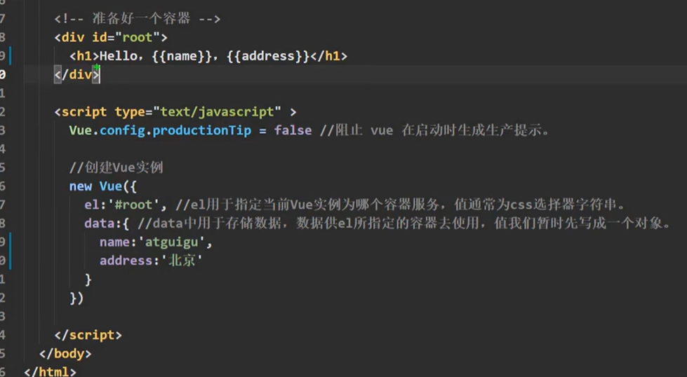vue示例和容器root，11对应
el：加#指定容器id，不加#指定容器class
双括号中支持的内容为：{{ js表达式}}
数据绑定
v-bind：
单向数据绑定 ：data数据里的值发生变化，组件的值就发生变化。
v-bind:value=“id”
// data:{ name:“123”}
但是组件上的值发生变化，data里的值不会发生变化
双向数据绑定 ：data数据里的值-同-组件的值，同步发生变化。
v-model:value=“id”
// data:{ name:“123”}
注意：v-model只能用在输入值表单元素上
$mount.挂载
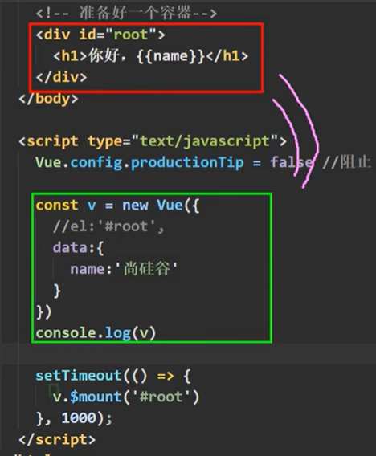 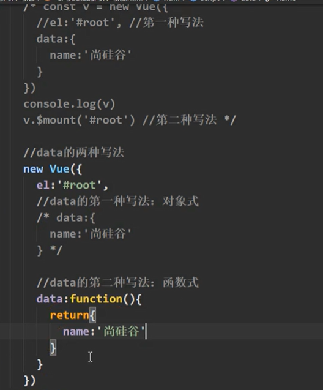箭头函数，没有this，data()=>{ }中调用的是实例不是vue是windows
MVVM模型
数据代理
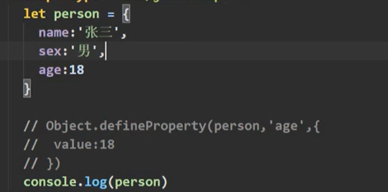 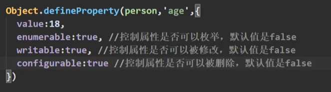 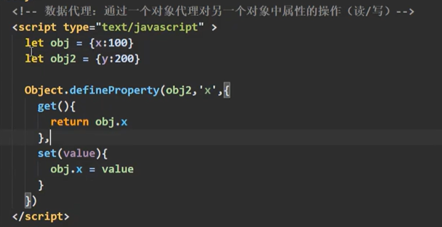v-on:click = "" 等价于 @click=""
click默认方法里面的传参，为点击事件event
event.target.innerText指获取当前点击元素的文本内容
:直接写是 v-bind 的简写
@直接写是 v-on 的简写
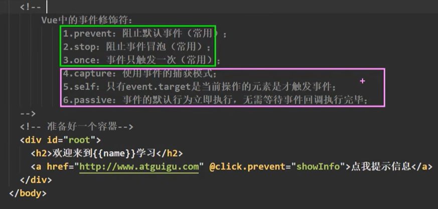事件修饰符prevent，用于操作点击默认的操作
@keyup 键盘事件
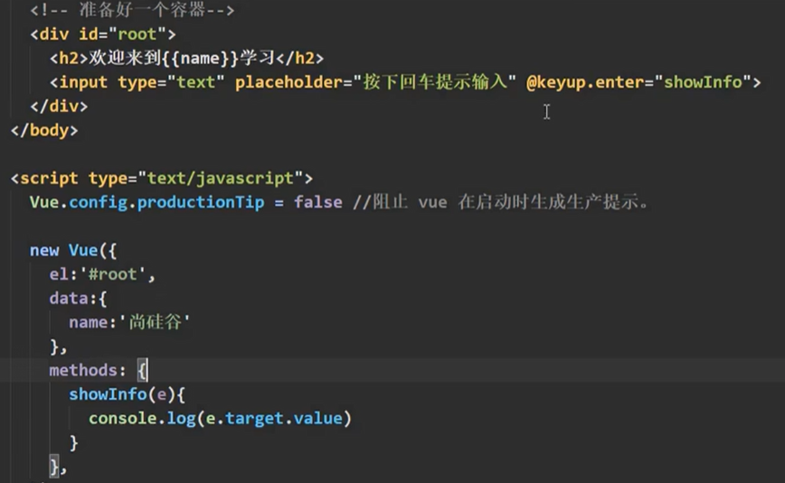 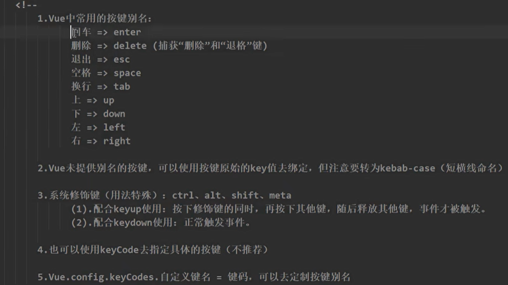computed计算属性
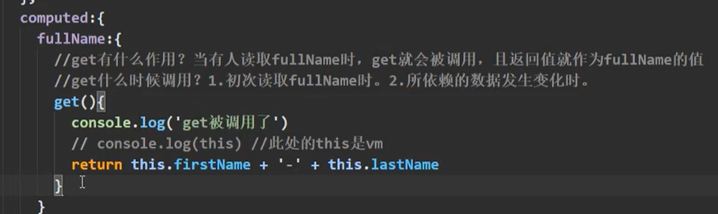 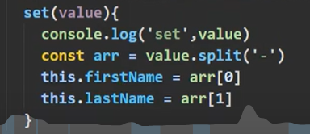 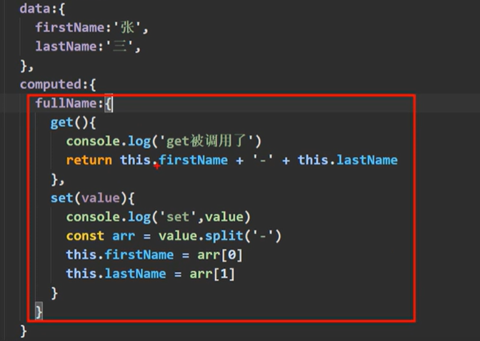 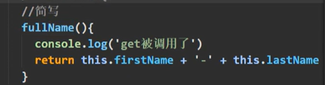只有读取的时候，简写get为计算属性名加（）{ get方法 }
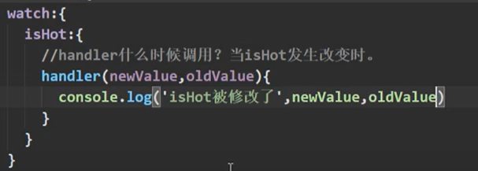 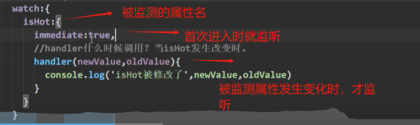 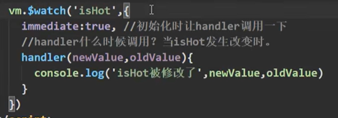深度监视
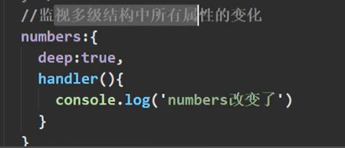加deep
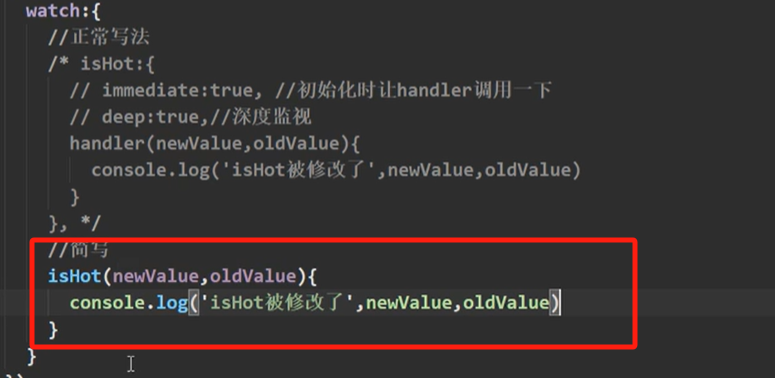 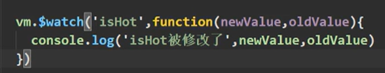 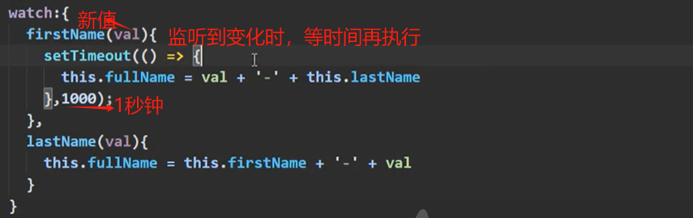computed计算属性不能实现异步返回，watch监听属性可以
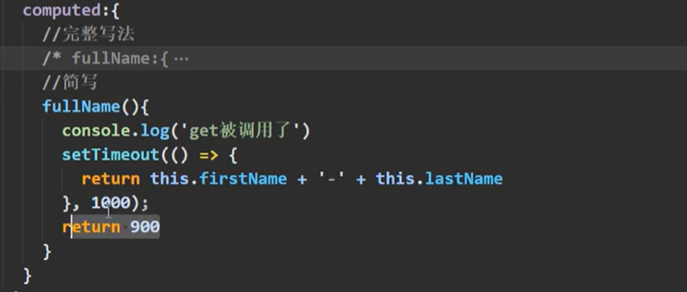条件渲染 v-show
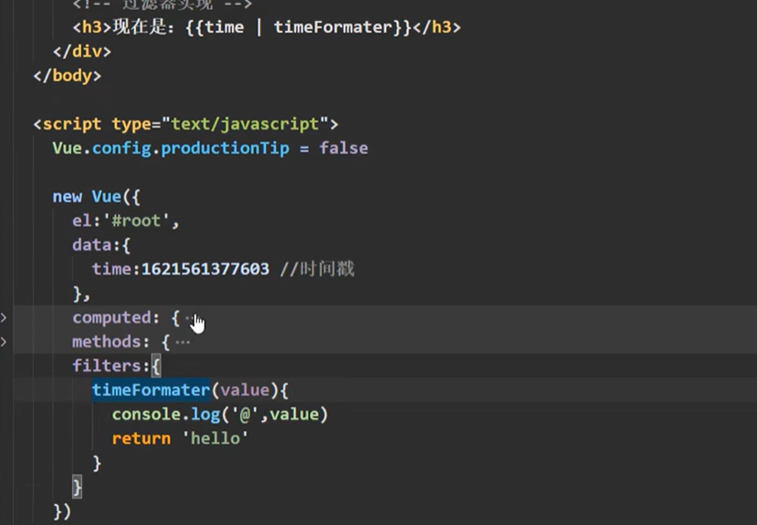 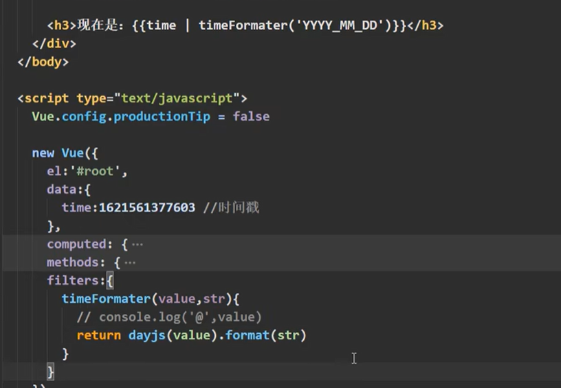 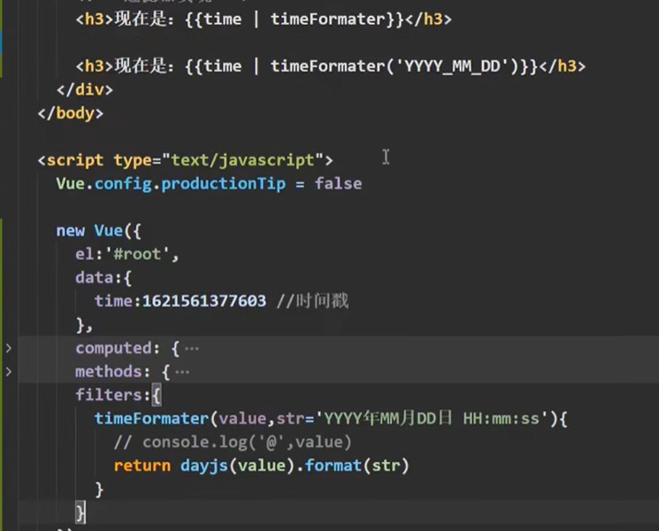 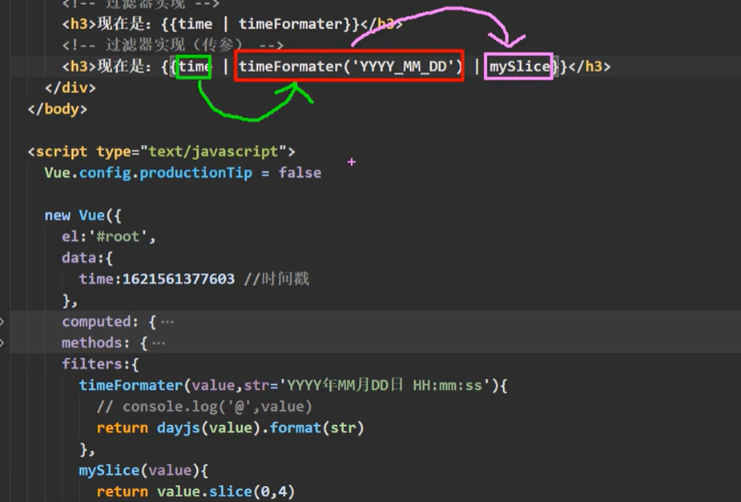 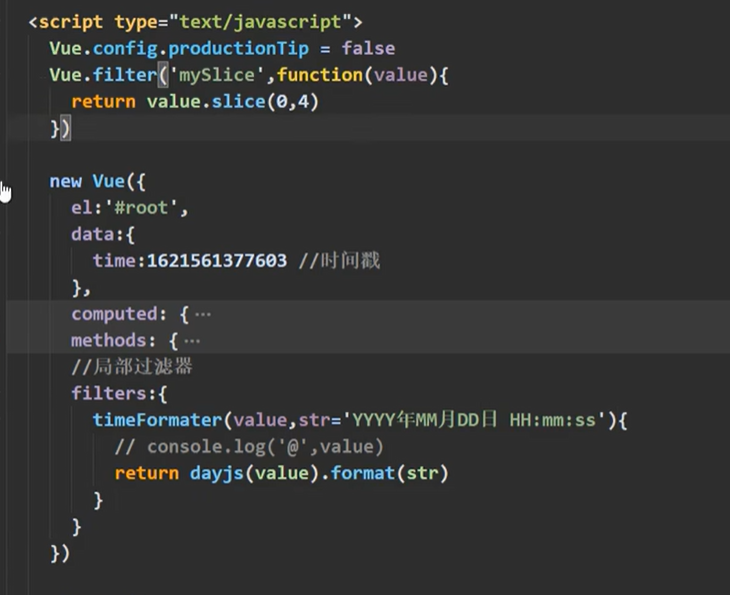v-text 对所在节点传入文本内容
v-html 对所在节点传入的 带标签的内容 解析成HTML展示
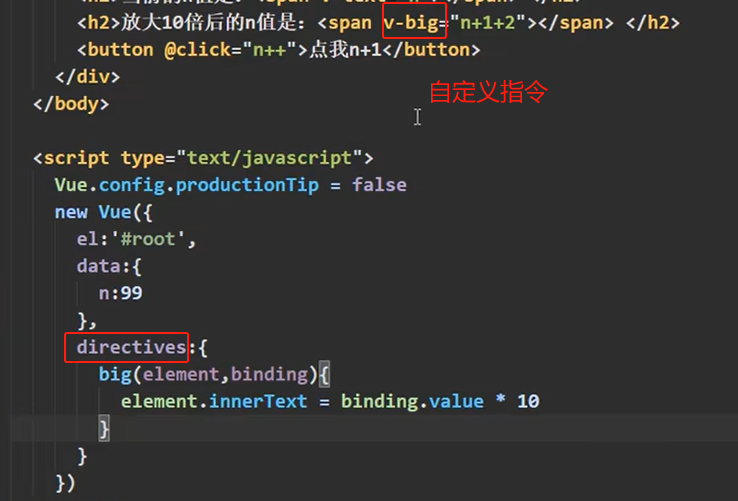 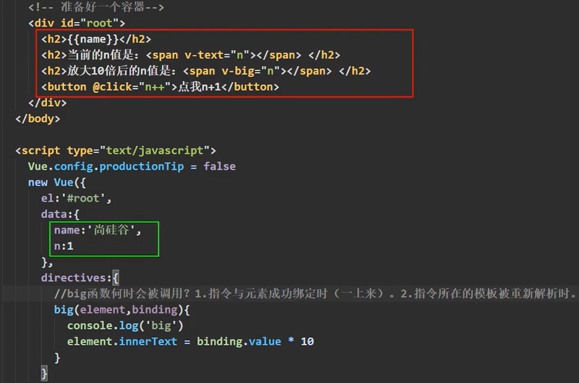生命周期
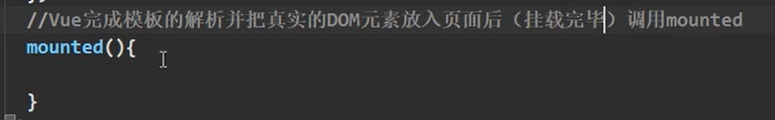mounted只调一次
mounted在页面挂载完成之后调用
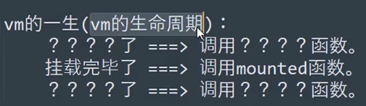关键的时间点，调一些函数
这些函数，统称为生命周期函数
beforeCreate() 有vm，可用this，无法访问data和method
生命周期流程：初始化生命周期+事件[数据代理未开始] => beforeCreate() =>初始化数据监测+数据代理 => created()
created() =>解析模板，生成虚拟dom内存，页面还不能显示解析的好的内容
beforeMount() = >虚拟dom转真是dom，存在vm.$el里
mounted()=>经过编译的等初始化操作
浏览器本地存储
：window.localStorage.getItem(‘userInfo’) window.localStorage.setItem(Json.stringify(userInfo)) let userInfo = {}
window.localStorage.removeItem(‘userInfo’)
会话存储sessionStorage：
会话会随浏览器窗口关闭而消失
nextTick()等待下一次 DOM 更新刷新的工具方法
setup() 渲染在beforeCreate之前，所有的渲染之前，不能用this，返回return为一个函数
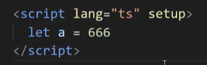简写形式，语法糖
decode用法
DECODE(value, if1, then1, if2, then2, …, else)